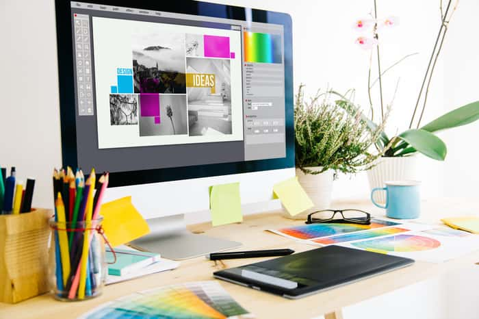

Nous concrétisons vos idées en tant qu’experts en design graphique, en réalisant le design adéquat pour chacune de vos demandes.
Nous répondons dans un délai maximum de 24 heures ouvrées.
Si aujourd’hui, tout le monde peut avoir accès aux différents outils qu’utilisent les graphistes au quotidien, comme les différents logiciels de la suite Adobe (Photoshop, Illustrator, etc…), n’importe qui ne peut s’improviser graphiste. Graphiste, ou designer graphique, c’est un métier.
Faire appel à un graphiste, c’est s’adjoindre les compétences d’un professionnel en mesure de vous apporter sa vision et ses aptitudes au service de votre projet. Grâce à une formation spécifique, un graphiste saura comprendre vos besoins, les enjeux de votre communication, et y répondre de façon créative.
La tarification de nos services se fait par rapport à la demande, c’est-à-dire que le prix s’adapte à votre besoin.
Par exemple : pour un affiche, le prix diffère d’une carte d’anniversaire simple.
Consultez nos réalisations et discutez avec nous pour trouver l’exemple de créa qui répond à vos besoins.
Logo
Retouche
Vidéo
Vous avez besoin d'un designer graphique professionnel pour créer votre communication, ou simplement pour
apporter des modifications à un projet ?
Nous sommes dotés d'une expertise dans le domaine, vous garantissant
une communication de qualité, adapté à vos besoin.